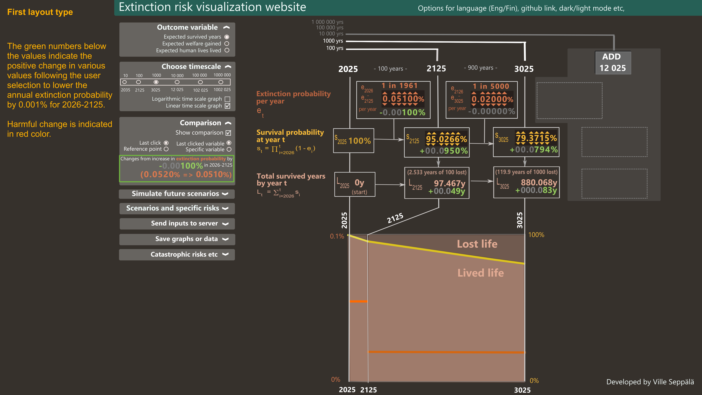
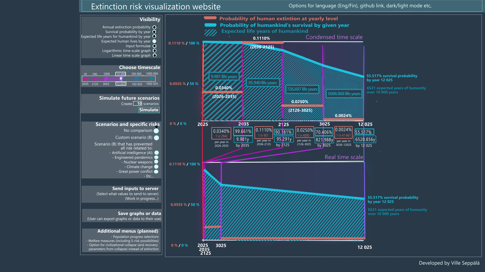

Website for demonstrating existential risk
Abstract and motivation for the site project
There is a considerable probability for humankind’s extinction, or at least a catastrophic civilizational collapse, within our lifetime. I am creating a website that allows the user to input these probabilities over different time periods. The site then calculates the expected longevity of humankind (measured in expected years the humankind will exist or in expected human lives left, for example). Results are accompanied by graphs.
The motivation behind the site is to help demonstrate in a concise and easily digestable manner that even very small improvements in existential risk will pay off immensely in the long run, in terms of humankind’s longevity. This should encourage the users to pursue these improvements in various ways.
Below, I will get into more detail about the site, presenting some early sketches of site and additional features/motivation.
Layout options
Layout of the site plays an important role in the site functonality. Below, there are different sketches and prototypes for the layout of the site. I’m not sure yet if I want to focus on any one kind of layout, or develop multiple at one time. This might depend on the time/funding I have to work on the project.

Interactive prototype
An early, fully interactive version of the site, still running entirely in browser instead of external server (the first load takes a few seconds while the R runtime downloads). Click any extinction probability, survival probability or potential-population digit and adjust it with the arrows, arrow keys, or by typing a number.
#| '!! shinylive warning !!': |
#| shinylive does not work in self-contained HTML documents.
#| Please set `embed-resources: false` in your metadata.
#| standalone: true
#| viewerHeight: 900
# ────────────────────────────────────────────────────────────────────────────
# Extinction-risk visualiser — replica of the right-hand data panel from the
# concept slide. Recomputes the whole cascade in R from the four annual
# extinction rates + population checkpoints, so it also serves as a clean
# recomputation to diff against the slide.
#
# Interaction (JavaScript): click an "Annual extinction probability" cell to
# select a period, then:
# ← / → move selection between periods
# ↑ / ↓ raise / lower that period's annual rate (Shift = fine step)
# The whole table + comparison deltas update live. "Set baseline" freezes the
# current state as the comparison reference; "Reset" restores defaults.
#
# Run: shiny::runApp("app_xrisk")
# ────────────────────────────────────────────────────────────────────────────
library(shiny)
`%||%` <- function(a, b) if (is.null(a)) b else a
# ── model config ────────────────────────────────────────────────────────────
START <- 2026
CPS <- c(2026, 2036, 2126, 3026, 12026) # checkpoint (column) years
SEG_START <- c(2027, 2037, 2127, 3027) # first year of each period
SEG_END <- c(2036, 2126, 3026, 12026) # last year of each period
SEG_LEN <- SEG_END - SEG_START + 1 # 10, 90, 900, 9000
DEF_RATES <- c(0.000340, 0.000510, 0.000250, 0.000024)
POP_CPS <- rep(8.3e9, 5) # constant 8300 M default at every checkpoint
LIFE_EXP <- 75
YRS_ALL <- START:max(CPS) # 2026 .. 12026
# potential population per year: geometric interpolation between the (editable)
# checkpoint values, so the potential-population column stays internally
# consistent — it hits the checkpoint values exactly at the checkpoint years.
build_pop <- function(pop_cps) {
pop <- numeric(length(YRS_ALL))
for (k in seq_len(length(CPS) - 1)) {
y0 <- CPS[k]; y1 <- CPS[k + 1]; v0 <- pop_cps[k]; v1 <- pop_cps[k + 1]
ix <- which(YRS_ALL >= y0 & YRS_ALL <= y1)
pop[ix] <- v0 * (v1 / v0) ^ ((YRS_ALL[ix] - y0) / (y1 - y0))
}
pop
}
# ── the cascade ─────────────────────────────────────────────────────────────
compute <- function(rates, pop_cps) {
POP_ALL <- build_pop(pop_cps)
seg <- findInterval(YRS_ALL, SEG_START) # 0 for 2026, else 1..4
r <- ifelse(seg >= 1, rates[pmax(seg, 1)], 0)
surv <- cumprod(1 - r) # survival to end of year
pop_exp <- POP_ALL * surv
lived <- seg >= 1 # years that actually count
cum_years <- cumsum(ifelse(lived, surv, 0))
cum_ly <- cumsum(ifelse(lived, pop_exp, 0))
cum_ly_pot <- cumsum(ifelse(lived, POP_ALL, 0))
ix <- match(CPS, YRS_ALL)
growth <- c(NA, (pop_cps[-1] / pop_cps[-length(pop_cps)]) ^ (1 / diff(CPS)) - 1)
list(
rates = rates,
pop_cps = pop_cps,
growth = growth,
surv = surv[ix],
pop_pot = POP_ALL[ix],
pop_exp = pop_exp[ix],
cum_years = cum_years[ix],
cum_ly = cum_ly[ix],
cum_ly_pot = cum_ly_pot[ix],
lives = cum_ly[ix] / LIFE_EXP,
lives_pot = cum_ly_pot[ix] / LIFE_EXP
)
}
# ── formatting ──────────────────────────────────────────────────────────────
f_rate <- function(x) paste0(formatC(x * 100, digits = 4, format = "f"), "%")
f_pct <- function(x) paste0(formatC(x * 100, digits = 4, format = "f"), "%")
f_int <- function(x) formatC(round(x), format = "f", digits = 0, big.mark = " ")
f_years <- function(x) paste0(formatC(x, digits = 3, format = "f", big.mark = " "), "y")
f_pop_m <- function(x) paste0(f_int(x / 1e6), "m")
f_ly <- function(x) paste0(f_int(x), " ly")
# colours
COL_RATE <- "#e8836f"; COL_SURV <- "#4fb8d6"; COL_POP <- "#e46ba6"
GOOD <- "#7fd18f"; BAD <- "#ee4d4d"; ZERO <- "#8a97a3"
# delta pill: kind = "more_good" (up is green) or "more_bad" (up is red)
fmt_delta <- function(cur, ref, kind, fmt) {
d <- cur - ref
if (abs(d) < 1e-9)
return(span(class = "d0", "±0")) # ±0
good <- (d > 0) == (kind == "more_good")
sgn <- if (d > 0) "+" else "−" # − for minus
span(style = paste0("color:", if (good) GOOD else BAD, ";"),
paste0(sgn, fmt(abs(d))))
}
# plain (non-editable) value cell on the grid (spans 2 half-columns)
gcell <- function(col, main, delta = NULL, sub = NULL, color = "#e8eef4") {
tags$div(class = "vcell", style = paste0("grid-column:", col, "/span 2;"),
div(class = "vstack",
div(class = "vmain", style = paste0("color:", color, ";"), HTML(main)),
if (!is.null(delta)) div(class = "vdelta", delta)),
if (!is.null(sub)) div(class = "vsub", HTML(sub)))
}
# insert thin-space thousands separators into a plain digit string
group3 <- function(s) {
ch <- rev(strsplit(s, "")[[1]]); out <- character(0)
for (i in seq_along(ch)) { if (i > 1 && (i - 1) %% 3 == 0) out <- c(out, " "); out <- c(out, ch[i]) }
paste(rev(out), collapse = "")
}
# build digit slots for a number — used for both the value and its (editable) delta.
# native : native value; abs() is shown, sign handled via sign_char
# to_disp : multiplier to display units (rate 100 → %, pop 1/1e6 → m)
# decimals : decimal places in display units
# pad : if set, always show this many integer digits (leading zeros greyed
# but still adjustable — lets the user ramp big places fast)
# digit_color : function(is_zero, is_lead) -> CSS colour or NULL (inherit)
# sign_char/sign_color : optional leading sign slot (for deltas)
build_slots <- function(native, to_disp, decimals, suffix, pad = NULL, editable = TRUE,
digit_color = NULL, sign_char = NULL, sign_color = NULL) {
a <- abs(native)
if (!is.null(pad))
s <- group3(formatC(round(a * to_disp), format = "d", width = pad, flag = "0"))
else
s <- formatC(a * to_disp, format = "f", digits = decimals, big.mark = " ")
chars <- strsplit(s, "")[[1]]
n <- length(chars)
dot <- match(".", chars); if (is.na(dot)) dot <- n + 1
place <- rep(NA_real_, n)
k <- 0 # integer digits, right → left
for (p in seq(dot - 1, 1)) {
if (grepl("[0-9]", chars[p])) { place[p] <- (10^k) / to_disp; k <- k + 1 }
}
if (dot < n) { # decimal digits, left → right
kk <- 1
for (p in seq(dot + 1, n)) {
if (grepl("[0-9]", chars[p])) { place[p] <- (10^(-kk)) / to_disp; kk <- kk + 1 }
}
}
lead <- rep(FALSE, n) # zeros before the first significant digit
seen <- FALSE
for (p in seq_len(n)) if (grepl("[0-9]", chars[p])) {
if (!seen && chars[p] == "0") lead[p] <- TRUE else seen <- TRUE
}
mkslot <- function(p) {
ch <- chars[p]
if (!is.na(place[p])) {
col <- if (!is.null(digit_color)) digit_color(ch == "0", lead[p])
else if (!is.null(pad) && lead[p]) "#5f7484" else NULL
tags$span(class = "dig", `data-delta` = formatC(place[p], format = "e", digits = 6),
if (editable) span(class = "ar up", HTML("▲")) else span(class = "arsp"),
tags$b(class = "dch", style = if (!is.null(col)) paste0("color:", col, ";"), ch),
if (editable) span(class = "ar dn", HTML("▼")) else span(class = "arsp"))
} else
tags$span(class = "sep", span(class = "arsp"),
tags$b(class = "dch", if (ch == " ") HTML(" ") else ch), span(class = "arsp"))
}
slots <- lapply(seq_len(n), mkslot)
if (!is.null(sign_char))
slots <- c(list(tags$span(class = "sep", span(class = "arsp"),
tags$b(class = "dch sgn", style = if (!is.null(sign_color)) paste0("color:", sign_color, ";"),
HTML(sign_char)), span(class = "arsp"))), slots)
if (nzchar(suffix))
slots <- c(slots, list(tags$span(class = "sep", span(class = "arsp"),
tags$b(class = "dch suf", HTML(suffix)), span(class = "arsp"))))
slots
}
# editable value cell: per-digit spinner
gcell_edit <- function(col, cur, ref, kind, vi, to_disp, decimals, suffix,
good = "more_good", sub = NULL, color, pad = NULL, top = NULL) {
dv <- cur - ref
cpos <- if (good == "more_good") GOOD else BAD # colour when delta positive
cneg <- if (good == "more_good") BAD else GOOD
dcol <- if (abs(dv) < 1e-12) ZERO else if (dv > 0) cpos else cneg
sgn <- if (abs(dv) < 1e-12) "±" else if (dv > 0) "+" else "−"
digit_color <- function(is0, lead) if (lead) ZERO else dcol
tags$div(class = "vcell xedit", style = paste0("grid-column:", col, "/span 2;"),
`data-kind` = kind, `data-i` = vi - 1,
if (!is.null(top)) div(class = "vtop", HTML(top)),
div(class = "vstack",
div(class = "vmain digits", style = paste0("color:", color, ";"),
build_slots(cur, to_disp, decimals, suffix, pad, TRUE)),
div(class = "vdelta digits",
build_slots(dv, to_disp, decimals, suffix, pad, TRUE,
digit_color = digit_color, sign_char = sgn, sign_color = dcol))),
if (!is.null(sub)) div(class = "vsub", HTML(sub)))
}
# a full metric row (label in column 1, then its value cells).
# cls = "erow" tints the whole row (label included) to flag it as editable.
# row = id used by the accordion toggle to collapse/expand this row.
metric_grow <- function(label, color, cells, cls = NULL, row = NULL, formula = NULL)
do.call(tags$div, c(list(class = trimws(paste("grow", cls %||% "")), `data-row` = row,
tags$div(class = "rlabel", style = paste0("color:", color, ";"),
span(class = "acc", HTML("▾")), span(class = "rlbl", HTML(label)),
if (!is.null(formula)) div(class = "rformula", HTML(formula)))),
cells))
# ── UI ──────────────────────────────────────────────────────────────────────
css <- r"(
body{background:#0b3552;color:#e8eef4;font-family:Arial,Helvetica,sans-serif;margin:0;}
.wrap{max-width:1240px;margin:0 auto;padding:18px 22px 70px;}
h1{font-size:21px;font-weight:700;margin:0 0 4px;}
.lead{font-size:13px;color:#b7c6d3;margin:0 0 14px;line-height:1.5;}
.controls{display:flex;gap:10px;align-items:center;margin:12px 0 20px;flex-wrap:wrap;}
.controls .btn{background:#12405f;color:#e8eef4;border:1px solid #2a6a8f;border-radius:6px;
padding:6px 13px;font-size:13px;cursor:pointer;}
.controls .btn:hover{background:#175981;}
.controls .btn.active{background:#1f77a8;border-color:#8fd6f2;color:#fff;box-shadow:0 0 0 1px #8fd6f2 inset;}
.khint{font-size:12.5px;color:#9fb0bf;}
.kbd{display:inline-block;background:#0a2438;border:1px solid #2a6a8f;border-radius:4px;
padding:0 7px;font-size:12px;margin:0 1px;line-height:18px;}
.grid-wrap{margin-top:4px;}
.grow{display:grid;grid-template-columns:200px repeat(10,1fr);align-items:start;
border-bottom:1px solid rgba(255,255,255,.05);}
.grow.ghead{border-bottom:1px solid rgba(255,255,255,.18);}
.grow.erow{background:rgba(255,255,255,.05);border-radius:7px;margin:3px 0;}
.rlabel{grid-column:1;text-align:left;font-size:12.5px;line-height:1.35;font-weight:600;
padding:9px 12px 9px 0;border-right:1px solid rgba(255,255,255,.10);}
.acc{cursor:pointer;color:#8fa3b3;font-size:10px;margin-right:6px;display:inline-block;user-select:none;}
.acc:hover{color:#ffd27f;}
.grow.collapsed .acc{transform:rotate(-90deg);}
.grow.collapsed .vcell{display:none;}
.grow.collapsed .rformula{display:none;}
.grow.collapsed{margin:1px 0;}
.rformula{font-size:12px;color:#cbb68e;margin-top:4px;padding-left:16px;font-weight:400;
line-height:1.6;font-family:Cambria,Georgia,"Times New Roman",serif;font-style:italic;}
.rformula sub{font-size:8.5px;font-style:normal;}
.rformula sup{font-size:8.5px;font-style:normal;}
.ycol{text-align:center;padding:2px 6px 7px;}
.ycol .yr{font-size:21px;font-weight:700;}
.ivlcell{text-align:center;font-size:11px;color:#9fb0bf;padding:3px 4px;align-self:center;
white-space:nowrap;}
.vcell{grid-row:1;padding:8px 7px;display:flex;flex-direction:column;align-items:center;text-align:center;}
.vstack{display:inline-flex;flex-direction:column;align-items:stretch;}
.vmain{font-size:15px;line-height:1.2;font-weight:700;word-break:break-word;font-variant-numeric:tabular-nums;text-align:right;}
.vmain .per{font-size:10px;color:#9fb0bf;font-weight:400;}
.vdelta{font-size:15px;margin-top:1px;font-weight:600;font-variant-numeric:tabular-nums;text-align:right;line-height:1.15;}
.vdelta .d0{color:#8a97a3;}
.vsub{font-size:11px;color:#8496a4;margin-top:3px;font-style:italic;line-height:1.35;}
.vgrowth{grid-row:1;align-self:start;margin-top:22px;text-align:center;font-size:12px;color:#8496a4;
font-style:italic;white-space:nowrap;padding:0 3px;pointer-events:none;}
@media (max-width:860px){ .vgrowth{grid-row:auto;margin-top:3px;} } /* narrow: drop below, no overlap */
.grow.collapsed .vgrowth{display:none;}
.ratio{color:#e8836f;font-size:13px;font-weight:600;font-style:normal;}
.rng{font-size:12px;font-style:italic;color:#8496a4;}
.vtop{line-height:1.1;margin-bottom:1px;}
.ital{font-style:italic;font-weight:400;opacity:.85;}
.digits{display:flex;justify-content:flex-end;align-items:flex-end;flex-wrap:nowrap;}
.dig,.sep{display:flex;flex-direction:column;align-items:center;line-height:1;}
.dig{width:1ch;} /* digit width fixed; larger arrows overflow it */
.dch{font-size:15px;font-weight:700;font-variant-numeric:tabular-nums;padding:0;}
.dch.suf{color:#9fb0bf;}
.dig.lead .dch{color:#5f7484;}
.ar{cursor:pointer;font-size:11px;color:#5f7484;user-select:none;height:13px;line-height:13px;padding:0;}
.ar:hover{color:#ffd27f;}
.arsp{height:13px;}
.dig.digsel .dch{color:#ffd27f !important;}
.dig.digsel .ar{color:#e8b96a;}
.xedit{cursor:pointer;border-radius:6px;}
.xedit:hover{background:rgba(255,255,255,.045);}
.xedit.sel{outline:2px solid rgba(255,210,127,.55);outline-offset:-2px;background:rgba(255,210,127,.06);}
.summary{margin:18px 0 0;font-size:13px;color:#cdd9e3;line-height:1.55;
border-top:1px solid rgba(255,255,255,.10);padding-top:12px;}
.summary b{color:#ffd27f;}
.foot{margin-top:22px;font-size:11.5px;color:#7d8fa0;line-height:1.5;}
)"
js <- r"(
var rates = [0.000340, 0.000510, 0.000250, 0.000024];
var pops = [8.3e9, 8.3e9, 8.3e9, 8.3e9, 8.3e9];
var LEN = [10, 90, 900, 9000]; // interval lengths (years)
var baseRates = rates.slice(), basePops = pops.slice(); // comparison baseline (from server)
var sel = {kind:'rate', i:1, place:0.00001, delta:false}; // value/delta + which digit
function pushState(){ if(window.Shiny) Shiny.setInputValue('state', {rates:rates, pops:pops}, {priority:'event'}); }
function cellOf(s){ return document.querySelector('.xedit[data-kind="'+s.kind+'"][data-i="'+s.i+'"]'); }
function digsOf(c){ if(!c) return []; return Array.prototype.slice.call(c.querySelectorAll((sel.delta ? '.vdelta' : '.vmain') + ' .dig')); }
function allCells(){ return Array.prototype.slice.call(document.querySelectorAll('.xedit')); }
function digDelta(el){ return parseFloat(el.getAttribute('data-delta')); }
function nearestDig(digs, place){ // match a digit by its place value
var best = 0, bd = Infinity;
for(var k = 0; k < digs.length; k++){
var d = Math.abs(Math.log(digDelta(digs[k])) - Math.log(place));
if(d < bd){ bd = d; best = k; }
}
return best;
}
function applyHighlight(){
allCells().forEach(function(c){
var on = c.getAttribute('data-kind') === sel.kind && (+c.getAttribute('data-i')) === sel.i;
c.classList.toggle('sel', on);
c.querySelectorAll('.dig').forEach(function(d){ d.classList.remove('digsel'); });
if(on){
var digs = digsOf(c);
if(digs.length){
var idx = nearestDig(digs, sel.place);
digs[idx].classList.add('digsel');
sel.place = digDelta(digs[idx]); // snap to an existing digit
}
}
});
}
function survOf(arr, i){ // cumulative survival through interval i
var p = 1; for(var k = 0; k <= i; k++) p *= Math.pow(1 - arr[k], LEN[k]); return p;
}
// set survival at checkpoint i to target T by solving the interval-i extinction
// rate, backtracing into earlier intervals when T exceeds the prior survival.
function setSurv(i, T){
T = Math.min(1, Math.max(0, T)); // 100% ceiling, 0 floor
for(var m = i; m >= 0; m--){
var Pprev = 1; for(var k = 0; k < m; k++) Pprev *= Math.pow(1 - rates[k], LEN[k]);
var needed = T / Pprev; // desired (1-r_m)^len_m
if(needed <= 1){ rates[m] = 1 - Math.pow(needed, 1 / LEN[m]); break; }
rates[m] = 0; // maxed this interval, keep backtracing
}
pushState();
}
var MINPLACE = { rate:1e-6, surv:1e-6, pop:1e6 }; // smallest editable digit per kind
function valOf(kind, i, rArr, pArr){ return kind === 'surv' ? survOf(rArr, i) : (kind === 'rate' ? rArr : pArr)[i]; }
function curVal(){ return valOf(sel.kind, sel.i, rates, pops); }
function baseVal(){ return valOf(sel.kind, sel.i, baseRates, basePops); }
function setValAbs(v){ // write the actual value (backtrace for surv)
if(sel.kind === 'surv'){ setSurv(sel.i, v); }
else { var arr = (sel.kind === 'rate') ? rates : pops; arr[sel.i] = Math.max(0, +v.toFixed(12)); pushState(); }
}
// when sel.delta, we edit the change (value − baseline); otherwise the value itself
function editVal(){ return sel.delta ? (curVal() - baseVal()) : curVal(); }
function applyEdit(nv){ setValAbs(sel.delta ? baseVal() + nv : nv); }
function change(dir){ // ▼ always lowers, ▲ always raises (monotonic)
applyEdit(editVal() + dir * sel.place); // crosses zero once, never flip-flops
}
// type a digit into the selected place (selection stays put)
function typeDigit(d){
var place = sel.place, v = editVal(), av = Math.abs(v), sign = v < 0 ? -1 : 1;
var cd = Math.floor(av / place + 1e-6) % 10; // current digit at this place
applyEdit(sign * (av + (d - cd) * place));
}
document.addEventListener('keydown', function(e){
var k = e.key;
if(/^[0-9]$/.test(k)){ e.preventDefault(); typeDigit(+k); return; }
if(['ArrowUp','ArrowDown','ArrowLeft','ArrowRight'].indexOf(k) < 0) return;
e.preventDefault();
if(k === 'ArrowUp') { change(1); return; }
if(k === 'ArrowDown') { change(-1); return; }
var cells = allCells(), cell = cellOf(sel); if(!cell) return;
var digs = digsOf(cell), idx = nearestDig(digs, sel.place), ci = cells.indexOf(cell);
if(k === 'ArrowRight'){
if(idx < digs.length - 1) sel.place = digDelta(digs[idx + 1]);
else if(ci < cells.length - 1){ var nc = cells[ci + 1], nd = digsOf(nc);
sel = {kind:nc.getAttribute('data-kind'), i:+nc.getAttribute('data-i'), place:digDelta(nd[0]), delta:sel.delta}; }
} else { // ArrowLeft
if(idx > 0) sel.place = digDelta(digs[idx - 1]);
else if(ci > 0){ var pc = cells[ci - 1], pd = digsOf(pc);
sel = {kind:pc.getAttribute('data-kind'), i:+pc.getAttribute('data-i'), place:digDelta(pd[pd.length - 1]), delta:sel.delta}; }
}
applyHighlight();
});
document.addEventListener('click', function(e){
var cell = e.target.closest('.xedit'); if(!cell) return;
var dig = e.target.closest('.dig');
if(dig){
sel = {kind:cell.getAttribute('data-kind'), i:+cell.getAttribute('data-i'),
place:digDelta(dig), delta: !!dig.closest('.vdelta')};
var up = e.target.closest('.ar.up'), dn = e.target.closest('.ar.dn');
if(up || dn){ change(up ? 1 : -1); return; }
applyHighlight();
} else {
sel.kind = cell.getAttribute('data-kind'); sel.i = +cell.getAttribute('data-i'); sel.delta = false;
applyHighlight();
}
});
// mouse wheel over a digit nudges that digit (up = raise, down = lower).
// Accumulate delta and step per threshold so a touchpad gesture (many events +
// inertia) doesn't run the digit away — ~one step per notch / firm swipe.
var wheelAcc = 0;
document.addEventListener('wheel', function(e){
var dig = e.target.closest('.dig'); if(!dig){ wheelAcc = 0; return; }
var cell = dig.closest('.xedit'); if(!cell){ wheelAcc = 0; return; }
e.preventDefault();
var d = e.deltaY;
if(e.deltaMode === 1) d *= 33; else if(e.deltaMode === 2) d *= 400; // lines/pages → px
if(wheelAcc !== 0 && (d < 0) !== (wheelAcc < 0)) wheelAcc = 0; // direction flip → reset
wheelAcc += d;
var STEP = 90;
if(Math.abs(wheelAcc) < STEP) return;
sel = {kind:cell.getAttribute('data-kind'), i:+cell.getAttribute('data-i'),
place:digDelta(dig), delta: !!dig.closest('.vdelta')};
var n = 0;
while(wheelAcc <= -STEP && n < 8){ wheelAcc += STEP; change(1); n++; }
while(wheelAcc >= STEP && n < 8){ wheelAcc -= STEP; change(-1); n++; }
if(n >= 8) wheelAcc = 0; // guard against a pathological single event
}, {passive:false});
var collapsed = {}; // row id -> hidden?
function applyCollapsed(){
document.querySelectorAll('.grow[data-row]').forEach(function(g){
g.classList.toggle('collapsed', !!collapsed[g.getAttribute('data-row')]);
});
}
document.addEventListener('click', function(e){
var acc = e.target.closest('.acc'); if(!acc) return;
var g = acc.closest('.grow'); if(!g) return;
var r = g.getAttribute('data-row'); collapsed[r] = !collapsed[r]; applyCollapsed();
});
$(document).on('shiny:value', function(ev){ if(ev.name === 'panel') setTimeout(function(){ applyHighlight(); applyCollapsed(); }, 0); });
$(document).on('shiny:connected', function(){ pushState(); setTimeout(function(){ applyHighlight(); applyCollapsed(); }, 60); });
if(window.Shiny){
Shiny.addCustomMessageHandler('setState', function(v){
rates = v.rates.slice(); pops = v.pops.slice(); pushState(); applyHighlight();
});
Shiny.addCustomMessageHandler('baseline', function(v){
baseRates = v.rates.slice(); basePops = v.pops.slice();
});
}
)"
ui <- fluidPage(
tags$head(tags$style(HTML(css))),
div(class = "wrap",
h1("Expected longevity of humanity under extinction risk"),
p(class = "lead",
"Each period's annual extinction probability cascades into survival ",
"probability, expected population, and cumulative human life lived. ",
"Deltas compare against the frozen baseline."),
div(class = "controls",
actionButton("surv100", "100% survival", class = "btn"),
uiOutput("basebtns", inline = TRUE),
actionButton("reset", "Reset to defaults", class = "btn"),
span(class = "khint", HTML(
"Edit any <b>extinction probability</b>, <b>survival probability</b>, or ",
"<b>potential population</b> digit — click its ",
"<span class='kbd'>▲</span>/<span class='kbd'>▼</span>, or select and use ",
"<span class='kbd'>←</span><span class='kbd'>→</span><span class='kbd'>↑</span><span class='kbd'>↓</span>, ",
"or type <span class='kbd'>0</span>–<span class='kbd'>9</span> to set the digit. ",
"Survival edits backtrace into the earlier extinction rates."))),
uiOutput("panel"),
uiOutput("summary"),
div(class = "foot", HTML(
"Potential population is interpolated geometrically between the ",
"checkpoints 8.2 / 8.9 / 10 / 10 / 10 bn, so it stays internally ",
"consistent. Lives = cumulative life-years ÷ 75.")),
tags$script(HTML(js)))
)
# ── server ──────────────────────────────────────────────────────────────────
server <- function(input, output, session) {
DEF_STATE <- list(rates = DEF_RATES, pops = POP_CPS)
state_r <- reactive({
s <- input$state
if (is.null(s)) DEF_STATE
else list(rates = as.numeric(s$rates), pops = as.numeric(s$pops))
})
mode <- reactiveVal("current") # "current" | "previous"
ref_static <- reactiveVal(DEF_STATE) # frozen baseline (current mode)
hist <- reactiveValues(prev = DEF_STATE, last = DEF_STATE)
# remember the state before the most recent change
observeEvent(input$state, {
hist$prev <- hist$last
hist$last <- state_r()
})
ref_state <- reactive(if (mode() == "previous") hist$prev else ref_static())
observe({ # keep JS informed of the baseline (for delta editing)
b <- ref_state()
session$sendCustomMessage("baseline",
list(rates = as.numeric(b$rates), pops = as.numeric(b$pops)))
})
observeEvent(input$setref, { ref_static(state_r()); mode("current") })
observeEvent(input$setprev, mode("previous"))
observeEvent(input$surv100, { # all survival → 100%, all x-risk → 0; rebase deltas to 0
new_state <- list(rates = as.numeric(c(0, 0, 0, 0)), pops = as.numeric(state_r()$pops))
session$sendCustomMessage("setState", new_state)
ref_static(new_state); mode("current")
})
observeEvent(input$reset, {
session$sendCustomMessage("setState",
list(rates = as.numeric(DEF_RATES), pops = as.numeric(POP_CPS)))
ref_static(DEF_STATE); hist$prev <- DEF_STATE; hist$last <- DEF_STATE
mode("current")
})
output$basebtns <- renderUI({
m <- mode()
tagList(
actionButton("setref", "Set baseline = current",
class = if (m == "current") "btn active" else "btn"),
actionButton("setprev", "Set baseline = previous value",
class = if (m == "previous") "btn active" else "btn"))
})
output$panel <- renderUI({
st <- state_r(); rf <- ref_state()
cur <- compute(st$rates, st$pops)
ref <- compute(rf$rates, rf$pops)
elapsed <- c(0, cumsum(SEG_LEN)) # 0,10,100,1000,10000
ycol <- function(j) 2 * j # grid start for year j
gcol <- function(i) 2 * i + 1 # grid start for gap i (between year i & i+1)
# header: years centered over their columns
header <- do.call(tags$div, c(list(class = "grow ghead",
tags$div(class = "rlabel", "")),
lapply(1:5, function(j)
tags$div(class = "ycol", style = paste0("grid-column:", ycol(j), "/span 2;"),
div(class = "yr", CPS[j])))))
# interval row: "← N years →" centered in each gap
intervals <- do.call(tags$div, c(list(class = "grow",
tags$div(class = "rlabel", "")),
lapply(1:4, function(i)
tags$div(class = "ivlcell", style = paste0("grid-column:", gcol(i), "/span 2;"),
HTML(paste0("← ", SEG_LEN[i], " years →"))))))
# 1 · annual extinction probability — editable, sits in the gaps between years
rate_cells <- lapply(1:4, function(i)
gcell_edit(gcol(i), cur = cur$rates[i], ref = ref$rates[i], kind = "rate", vi = i,
to_disp = 100, decimals = 4, suffix = "%", good = "more_bad",
top = paste0("<span class='ratio'>1 in ", f_int(1 / cur$rates[i]), "</span>"),
sub = paste0("<span class='rng'>", SEG_START[i], "–", SEG_END[i], "</span>"),
color = COL_RATE))
# 2 · survival probability given past extinction — editable (backtraces to rates)
surv_cells <- lapply(1:5, function(j) {
if (j == 1) # 2026 is fixed at 100%
return(gcell(ycol(1), f_pct(cur$surv[1]), color = COL_SURV))
gcell_edit(ycol(j), cur = cur$surv[j], ref = ref$surv[j], kind = "surv", vi = j - 1,
to_disp = 100, decimals = 4, suffix = "%", good = "more_good",
color = COL_SURV)
})
# 3 · cumulative survived years of humanity
years_cells <- lapply(1:5, function(j)
gcell(ycol(j), if (j == 1) "0" else f_years(cur$cum_years[j]),
if (j == 1) NULL else fmt_delta(cur$cum_years[j], ref$cum_years[j], "more_good", f_years),
if (j == 1) NULL else paste0("of ", f_int(elapsed[j]), "y potential"),
color = COL_SURV))
# 4 · potential population if survived — editable checkpoints
pop_pot_cells <- lapply(1:5, function(j)
gcell_edit(ycol(j), cur = cur$pop_pot[j], ref = ref$pop_pot[j], kind = "pop", vi = j,
to_disp = 1 / 1e6, decimals = 0, suffix = "m", pad = 5, good = "more_good",
color = COL_POP))
# per-period growth rate sits in the gap between the two checkpoints it spans
growth_cells <- lapply(1:4, function(i) {
g <- cur$growth[i + 1] * 100
tags$div(class = "vgrowth", style = paste0("grid-column:", gcol(i), "/span 2;"),
HTML(paste0(if (g >= 0) "+" else "", formatC(g, digits = 3, format = "f"), "%/yr")))
})
# 5 · expected population with survival probabilities
pop_exp_cells <- lapply(1:5, function(j)
gcell(ycol(j), f_int(cur$pop_exp[j]),
if (j == 1) NULL else fmt_delta(cur$pop_exp[j], ref$pop_exp[j], "more_good", f_int),
if (j == 1) NULL else paste0("of ", f_int(cur$pop_pot[j]), " potential"),
color = COL_POP))
# 6 · expected cumulative lived human life-years
ly_cells <- lapply(1:5, function(j)
gcell(ycol(j), if (j == 1) "0" else paste0(f_int(cur$cum_ly[j]), " ly"),
if (j == 1) NULL else fmt_delta(cur$cum_ly[j], ref$cum_ly[j], "more_good", f_ly),
if (j == 1) NULL else paste0("of ", f_int(cur$cum_ly_pot[j]), " potential"),
color = COL_POP))
# 7 · expected cumulative lived human lives (75y)
lives_cells <- lapply(1:5, function(j)
gcell(ycol(j), if (j == 1) "0" else f_int(cur$lives[j]),
if (j == 1) NULL else fmt_delta(cur$lives[j], ref$lives[j], "more_good", f_int),
if (j == 1) NULL else paste0(f_int(cur$lives_pot[j] - cur$lives[j]), " less than potential"),
color = COL_POP))
div(class = "grid-wrap",
header,
intervals,
metric_grow("Annual extinction<br>probability <span class='ital'>if survived</span>", COL_RATE, rate_cells, cls = "erow", row = "rate",
formula = "e<sub>t</sub>"),
metric_grow("Survival probability<br><span class='ital'>given past extinction</span>", COL_SURV, surv_cells, cls = "erow", row = "surv",
formula = "s<sub>t</sub> = ∏<sub>i=2027</sub><sup>t</sup> (1 − e<sub>i</sub>)"),
metric_grow("Cumulative survived<br>years of humanity", COL_SURV, years_cells, row = "years",
formula = "L<sub>t</sub> = ∑<sub>i=2027</sub><sup>t</sup> s<sub>i</sub>"),
metric_grow("Potential population<br><span class='ital'>if survived</span>", COL_POP, c(pop_pot_cells, growth_cells), cls = "erow", row = "pop",
formula = "P<sub>t</sub>"),
metric_grow("Expected population<br><span class='ital'>with survival prob.</span>", COL_POP, pop_exp_cells, row = "popexp",
formula = "E<sub>t</sub> = P<sub>t</sub> · s<sub>t</sub>"),
metric_grow("Expected cumulative<br>lived human life-years", COL_POP, ly_cells, row = "ly",
formula = "H<sub>t</sub> = ∑<sub>i=2027</sub><sup>t</sup> E<sub>i</sub>"),
metric_grow("Expected cumulative<br>lived human lives <span class='ital'>(75y)</span>", COL_POP, lives_cells, row = "lives",
formula = "N<sub>t</sub> = H<sub>t</sub> / 75"))
})
output$summary <- renderUI({
st <- state_r()
cur <- compute(st$rates, st$pops)
div(class = "summary", HTML(paste0(
"With these rates, humanity survives to <b>", max(CPS),
"</b> with <b>", f_pct(cur$surv[5]), "</b> probability, is expected to live ",
"<b>", f_years(cur$cum_years[5]), "</b> of the next ",
f_int(sum(SEG_LEN)), " years, and to accrue <b>", f_int(cur$lives[5]),
"</b> human lives (", f_int(cur$cum_ly[5]), " life-years).")))
})
}
shinyApp(ui, server)Threshold curve editor
An alternative prototype where you sketch the whole risk profile as a curve rather than typing numbers. Drag the red extinction-probability-per-year handles or the blue population handles across the timeline (years 0–1110 over three log-spaced spans).
#| '!! shinylive warning !!': |
#| shinylive does not work in self-contained HTML documents.
#| Please set `embed-resources: false` in your metadata.
#| standalone: true
#| viewerHeight: 900
# ============================================================================
# Shiny — hazard/survival threshold controls (value-space, bidirectional).
# ----------------------------------------------------------------------------
# Curve interpolated in VALUE space (cubic Hermite on value vs fx), mapped
# through the y-axis for drawing, so it bends where it crosses a decade band.
#
# Two control sets, one authoritative at a time ("driver"):
# * Hazard set (red): anchors value+slope, per-segment controls -> hazard(fx),
# survival derived by S=prod(1-h)^dy.
# * Survival set (blue): same handles on the survival curve -> survival(fx),
# hazard derived by h = 1 - (S_i/S_{i-1})^(1/dy).
# Grabbing a handle makes its set the driver; the other set is greyed and just
# tracks the derived curve. Default hazard peaks around year 20.
#
# Run: shiny::runApp("hazard_thresholds.R")
# ============================================================================
required <- c("shiny", "ggplot2")
missing <- required[!vapply(required, requireNamespace, logical(1), quietly = TRUE)]
if (length(missing)) install.packages(missing)
library(shiny)
library(ggplot2)
## ---- constants + shared helpers -------------------------------------------
SPANX <- c(10, 100, 1000); M <- 100; Wpx <- 1100; Hpx <- 619 # 16:9
haz_to_fy <- function(h) {
h <- pmin(1e-1, pmax(1e-5, h)); d <- floor(log10(h)); seg <- pmin(3, pmax(0, d + 5))
lo <- 10^(seg-5); hi <- 10^(seg-4); (seg + pmin(1, pmax(0, (h-lo)/(hi-lo)))) / 4
}
fit_linexp <- function(mx) max(-5, min(-1, floor(log10(mx)) + 1))
herm <- function(px, x0, y0, m0, x1, y1, m1) {
h <- x1 - x0; u <- (px-x0)/h
y0*(2*u^3-3*u^2+1) + m0*h*(u^3-2*u^2+u) + y1*(-2*u^3+3*u^2) + m1*h*(u^3-u^2)
}
default_atheta <- function(anchors) {
fy <- haz_to_fy(anchors); px <- (0:3)/3*Wpx; py <- (1-fy)*Hpx; th <- numeric(4)
for (i in 1:4) { lo <- max(1,i-1); hi <- min(4,i+1); th[i] <- atan2(py[hi]-py[lo], px[hi]-px[lo]) }
th
}
sample_set <- function(anchors, thetaL, thetaR, fxc, cval, useCtrl, dYdv, clampV, log_time = FALSE) {
tfrac <- function(u) if (log_time) (10^u - 1) / 9 else u # log: single decade of time per span
rows <- list()
for (s in 1:3) {
fxL <- (s-1)/3; fxR <- s/3; hL <- anchors[s]; hR <- anchors[s+1]
mL <- tan(thetaR[s])*Wpx/dYdv(hL); mR <- tan(thetaL[s+1])*Wpx/dYdv(hR); mC <- (hR-hL)/(fxR-fxL)
fxC <- fxc[s]; hC <- cval[s]; ms <- if (s==1) 0:M else 1:M; fx <- fxL + (ms/M)*(fxR-fxL)
u <- ms/M; dy <- SPANX[s] * (tfrac(u) - tfrac(u - 1/M)) # years covered by each sample
v <- if (useCtrl) ifelse(fx<=fxC, herm(fx,fxL,hL,mL,fxC,hC,mC), herm(fx,fxC,hC,mC,fxR,hR,mR))
else herm(fx,fxL,hL,mL,fxR,hR,mR)
rows[[s]] <- data.frame(fx = fx, val = clampV(v), dy = dy)
}
do.call(rbind, rows)
}
haz_dYdv <- function(h, lm, linearY) {
if (linearY) return(-Hpx/lm)
h <- pmin(1e-1, pmax(1e-5, h)); seg <- pmin(3, pmax(0, floor(log10(h))+5))
lo <- 10^(seg-5); hi <- 10^(seg-4); -(Hpx/4)/(hi-lo)
}
compute_both <- function(hz, sv, driver, useCtrl, linearY, log_time = FALSE) {
if (driver == "hazard") {
lm <- if (linearY) 10^fit_linexp(max(hz$anchors)) else 1
hs <- sample_set(hz$anchors, hz$thetaL, hz$thetaR, hz$fxc, hz$cval, useCtrl,
function(h) haz_dYdv(h, lm, linearY), function(v) pmin(1e-1, pmax(1e-5, v)), log_time)
surv <- cumprod((1 - hs$val)^hs$dy)
} else {
ss <- sample_set(sv$anchors, sv$thetaL, sv$thetaR, sv$fxc, sv$cval, useCtrl,
function(v) -Hpx, function(v) pmin(1, pmax(0, v)), log_time)
ss$val <- cummin(pmax(1e-6, ss$val)) # survival is non-increasing
prev <- c(1, head(ss$val, -1)); r <- pmin(1, pmax(1e-9, ss$val/prev))
hs <- data.frame(fx = ss$fx, val = pmin(1e-1, pmax(1e-5, 1 - r^(1/ss$dy))), dy = ss$dy)
surv <- ss$val
lm <- if (linearY) 10^fit_linexp(max(hs$val)) else 1
}
fy_of <- function(v) if (linearY) pmin(1, pmax(0, v/lm)) else haz_to_fy(v)
data.frame(fx = hs$fx, fy = fy_of(hs$val), hz = hs$val, surv = surv)
}
## ---- JS overlay -----------------------------------------------------------
overlay_js <- HTML(r"---(
(function(){
const NS="http://www.w3.org/2000/svg";
const HAZ="#e8836f", SUR="#4fb8d6", HBAR="#c96f5c", SBAR="#3f9ab5";
const POP="#e46ba6", PBAR="#a84e7d";
let popMax=1e10; // population axis ceiling; grows by decades (10 B, 100 B, ...)
const POP_DEFAULT={ anchors:[8.3e9,8.3e9,8.3e9,8.3e9], thetaL:[0,0,0,0], thetaR:[0,0,0,0], fxc:[1/6,0.5,5/6], cval:[8.3e9,8.3e9,8.3e9] };
const PAL=["#1a9850","#91cf60","#fdae61","#d73027"];
const SPANX=[10,100,1000], M=100, GRAB=15, LEV=34, LIN_EMIN=-5, LIN_EMAX=-1;
let showPoints=true, useCtrl=false, split=true, linearY=true, logTime=false, driver="hazard";
let minorGrid=[];
function tFrac(u){ return logTime ? (Math.pow(10,u)-1)/9 : u; } // log: single decade of time per span
let linExp=-1, linMax=0.1, grewReach=false; // grewReach: population one-grow-per-reach guard
let W,H, hazSet={anchors:[],ctrls:[]}, survSet={anchors:[],ctrls:[]}, popSet={anchors:[],ctrls:[]}, hazS=[], survS=[], popS=[];
let yTicks=[], popTicks=[], infoTx=[], bandsG, bandSig="", svg, label, hazLine, surLine, popLine, expLine, readySent=false, drag=null;
let baseHazLine, baseSurLine, basePopLine, baseExpLine;
let baseMode="none", baseSnap=null, prevSnap=null; // comparison: "none" | "current" | "previous"
const clampHaz=h=>Math.max(1e-5,Math.min(1e-1,h)), clamp01=v=>Math.max(0,Math.min(1,v)), sX=fx=>fx*W;
function hazToFyDec(h){ h=clampHaz(h); let seg=Math.min(3,Math.max(0,Math.floor(Math.log10(h))+5));
const lo=Math.pow(10,seg-5),hi=Math.pow(10,seg-4); return (seg+Math.max(0,Math.min(1,(h-lo)/(hi-lo))))/4; }
const sYh=h=>linearY?(1-clamp01(h/linMax))*H:(1-hazToFyDec(h))*H;
const hazFromFy=fy=>linearY?clampHaz(clamp01(fy)*linMax):(function(){let seg=Math.min(3,Math.floor(clamp01(fy)*4)),frac=clamp01(fy)*4-seg,
lo=Math.pow(10,seg-5),hi=Math.pow(10,seg-4);return lo+frac*(hi-lo);})();
const sYs=s=>(1-s)*H;
const ratio=h=>Math.round(1/clampHaz(h)).toLocaleString();
function foldClamp(a){ if(a>Math.PI/2)a-=Math.PI; else if(a<-Math.PI/2)a+=Math.PI; return Math.max(-1.35,Math.min(1.35,a)); }
function herm(px,x0,y0,m0,x1,y1,m1){ const h=x1-x0,u=(px-x0)/h;
return y0*(2*u*u*u-3*u*u+1)+m0*h*(u*u*u-2*u*u+u)+y1*(-2*u*u*u+3*u*u)+m1*h*(u*u*u-u*u); }
function dScreenYdh(h){ if(linearY) return -H/linMax; h=clampHaz(h);
const seg=Math.min(3,Math.max(0,Math.floor(Math.log10(h))+5)),lo=Math.pow(10,seg-5),hi=Math.pow(10,seg-4); return -(H/4)/(hi-lo); }
// variable descriptors
const HDESC={ yOf:sYh, invY:py=>hazFromFy(1-py/H), clampV:clampHaz, dYdv:dScreenYdh, col:HAZ, bar:HBAR, ratioLbl:v=>"1 in "+ratio(v)+" ("+(v*100).toFixed(4)+"%)" };
const SDESC={ yOf:s=>(1-s)*H, invY:py=>clamp01(1-py/H), clampV:clamp01, dYdv:()=> -H, col:SUR, bar:SBAR, ratioLbl:v=>(v*100).toFixed(1)+"% surv" };
const sYp = p=>(1-clamp01(p/popMax))*H;
const PDESC={ yOf:sYp, invY:py=>clamp01(1-py/H)*popMax, clampV:p=>Math.max(0,Math.min(1e15,p)), dYdv:()=>-H/popMax, col:POP, bar:PBAR, ratioLbl:v=>Math.round(v/1e6).toLocaleString()+" M pop" };
function maxPopVal(){ let m=0; popSet.anchors.forEach(a=>{ if(a.val>m)m=a.val; }); popS.forEach(p=>{ if(p.val>m)m=p.val; }); return m; }
function growPop(){ if(maxPopVal()<0.8*popMax) grewReach=false; // value came back down → re-arm
if(!grewReach && maxPopVal()>=popMax && popMax<1e14){ popMax*=10; grewReach=true; } }
function fitPop(){ const mx=maxPopVal(); popMax=Math.max(1e10, Math.pow(10, Math.ceil(Math.log10(Math.max(1,mx))))); }
// comparison baseline snapshot (sampled value arrays, aligned by index)
function snap(){ return { fx:hazS.map(p=>p.fx), haz:hazS.map(p=>p.val), surv:survS.map(p=>p.val), pop:popS.map(p=>p.val), dy:popS.map(p=>p.dy) }; }
function activeBase(){ return baseMode==="previous"?prevSnap:(baseMode==="current"?baseSnap:null); }
function curveValAt2(fxA,valA,fx){ if(fx<=fxA[0])return valA[0]; for(let i=1;i<fxA.length;i++){ if(fxA[i]>=fx){ const t=(fx-fxA[i-1])/(fxA[i]-fxA[i-1]); return valA[i-1]+t*(valA[i]-valA[i-1]); } } return valA[valA.length-1]; }
// stack labels so higher value sits higher (smaller y) with a minimum gap
function stackByValue(items,gap){ items.sort((a,b)=>b.val-a.val); for(let i=1;i<items.length;i++){ if(items[i].y<items[i-1].y+gap) items[i].y=items[i-1].y+gap; } return items; }
function updateCmpBtns(){ const c=document.getElementById("baseCur"), p=document.getElementById("basePrev");
if(c) c.classList.toggle("active", baseMode==="current"); if(p) p.classList.toggle("active", baseMode==="previous"); }
function setByName(n){ return n==="hazard"?hazSet:(n==="pop"?popSet:survSet); }
function descByName(n){ return n==="hazard"?HDESC:(n==="pop"?PDESC:SDESC); }
function fmtM(v){ return Math.round(v/1e6).toLocaleString(); }
function fmtBig(v){ const a=Math.abs(v); if(a>=1e12)return (v/1e12).toFixed(2)+" T"; if(a>=1e9)return (v/1e9).toFixed(2)+" B"; if(a>=1e6)return (v/1e6).toFixed(1)+" M"; return Math.round(v).toLocaleString(); }
function mk(t,a){ const e=document.createElementNS(NS,t); for(const k in a) e.setAttribute(k,a[k]); return e; }
function mouse(e){ const r=svg.getBoundingClientRect(); return {x:(e.clientX-r.left)*(W/r.width), y:(e.clientY-r.top)*(H/r.height)}; }
function setFont(px){ let st=document.getElementById("ovFont"); if(!st){ st=document.createElement("style"); st.id="ovFont"; document.head.appendChild(st); }
st.textContent="#overlay text{font-size:"+px+"px;}"; } // one CSS rule overrides every SVG label
function maxHaz(){ let m=0; hazSet.anchors.forEach(a=>{ if(a.val>m) m=a.val; }); return m; }
function setLinExp(e){ e=Math.max(LIN_EMIN,Math.min(LIN_EMAX,e)); linExp=e; linMax=Math.pow(10,e); }
function fitLinExp(){ setLinExp(Math.floor(Math.log10(maxHaz()))+1); }
function paletteColor(i){ return PAL[Math.max(0,Math.min(3,i))]; }
function rebuildBands(){ bandsG.innerHTML="";
if(!linearY){ for(let b=0;b<4;b++){ const yBot=(1-b/4)*H,yTop=(1-(b+1)/4)*H,hgt=yBot-yTop;
bandsG.appendChild(mk("rect",{x:0,y:yTop,width:W,height:hgt,fill:"none",stroke:paletteColor(b),"stroke-width":1.5,opacity:0.85}));
if(b>0) for(let k=1;k<=10;k++){ const yy=yBot-(k/10)*hgt;
bandsG.appendChild(mk("line",{x1:0,y1:yy,x2:W,y2:yy,stroke:paletteColor(b-1),"stroke-width":1,opacity:0.28})); } } }
else { bandsG.appendChild(mk("rect",{x:0,y:0,width:W,height:H,fill:"none",stroke:paletteColor(linExp+4),"stroke-width":1.5,opacity:0.85}));
for(let k=1;k<=10;k++){ const yy=(1-k/10)*H; bandsG.appendChild(mk("line",{x1:0,y1:yy,x2:W,y2:yy,stroke:paletteColor(linExp+3),"stroke-width":1,opacity:0.28})); } } }
function updateYTicks(){ for(let k=0;k<yTicks.length;k++){ const fy=k/4;
let txt; if(linearY){ const h=fy*linMax; txt=h<=0?"0":"1 in "+Math.round(1/h).toLocaleString(); yTicks[k].setAttribute("fill",HAZ); }
else { txt="1 in "+Math.pow(10,5-k).toLocaleString(); yTicks[k].setAttribute("fill",paletteColor(Math.min(3,k))); } yTicks[k].textContent=txt; } }
function sampleSet(set, desc){
const out=[];
for(let s=0;s<3;s++){ const fxL=s/3,fxR=(s+1)/3,hL=set.anchors[s].val,hR=set.anchors[s+1].val;
const mL=Math.tan(set.anchors[s].thetaR)*W/desc.dYdv(hL), mR=Math.tan(set.anchors[s+1].thetaL)*W/desc.dYdv(hR);
const fxC=set.ctrls[s].fxc,hC=set.ctrls[s].val,mC=(hR-hL)/(fxR-fxL);
for(let m=(s===0?0:1);m<=M;m++){ const fx=fxL+(m/M)*(fxR-fxL), dy=SPANX[s]*(tFrac(m/M)-tFrac((m-1)/M));
let v=useCtrl?(fx<=fxC?herm(fx,fxL,hL,mL,fxC,hC,mC):herm(fx,fxC,hC,mC,fxR,hR,mR)):herm(fx,fxL,hL,mL,fxR,hR,mR);
out.push({fx:fx,val:desc.clampV(v),dy:dy}); } }
return out;
}
function deriveSurv(hs){ let s=1; return hs.map(p=>{ s*=Math.pow(1-p.val,p.dy); return {fx:p.fx,val:clamp01(s),dy:p.dy}; }); }
function deriveHaz(ss){ let prev=1; return ss.map(p=>{ const r=Math.max(1e-9,Math.min(1,p.val/prev)); const h=clampHaz(1-Math.pow(r,1/p.dy)); prev=p.val; return {fx:p.fx,val:h,dy:p.dy}; }); }
function curveValAt(sm,fx){ if(fx<=sm[0].fx) return sm[0].val;
for(let i=1;i<sm.length;i++){ if(sm[i].fx>=fx){ const t=(fx-sm[i-1].fx)/(sm[i].fx-sm[i-1].fx); return sm[i-1].val+t*(sm[i].val-sm[i-1].val); } } return sm[sm.length-1].val; }
function syncSet(set, sm, desc){
set.anchors.forEach(a=>{ a.val=curveValAt(sm,a.fx);
const v0=curveValAt(sm,Math.max(0,a.fx-0.01)), v1=curveValAt(sm,Math.min(1,a.fx+0.01));
const th=foldClamp(Math.atan2(desc.yOf(v1)-desc.yOf(v0), 0.02*W)); a.thetaL=th; a.thetaR=th; });
set.ctrls.forEach(k=>{ k.val=curveValAt(sm,k.fxc); }); }
function recompute(){
popS=sampleSet(popSet,PDESC); // population is an independent input curve
if(driver==="hazard"){ if(linearY) fitLinExp();
hazS=sampleSet(hazSet,HDESC); survS=deriveSurv(hazS); syncSet(survSet,survS,SDESC); }
else { survS=sampleSet(survSet,SDESC); let prev=1; survS.forEach(p=>{ p.val=Math.min(prev,Math.max(1e-6,p.val)); prev=p.val; });
hazS=deriveHaz(survS); if(linearY){ let mx=0; hazS.forEach(p=>{ if(p.val>mx) mx=p.val; }); setLinExp(Math.floor(Math.log10(mx))+1); }
syncSet(hazSet,hazS,HDESC); } }
function styleSet(set, desc, active, hidden){
let base=active?1:0.4, op=showPoints?base:0, oc=(active&&useCtrl)?(showPoints?1:0):(showPoints?base*0.6:0);
if(hidden){ op=0; oc=0; }
const dc=active?desc.col:"#bbb", bc=active?desc.bar:"#ccc";
set.anchors.forEach(a=>{ const cx=sX(a.fx), cy=desc.yOf(a.val);
const eRx=cx+LEV*Math.cos(a.thetaR),eRy=cy+LEV*Math.sin(a.thetaR),eLx=cx-LEV*Math.cos(a.thetaL),eLy=cy-LEV*Math.sin(a.thetaL);
a.barL.setAttribute("x1",cx);a.barL.setAttribute("y1",cy);a.barL.setAttribute("x2",eLx);a.barL.setAttribute("y2",eLy);a.barL.setAttribute("stroke",bc);a.barL.setAttribute("opacity",op);
a.barR.setAttribute("x1",cx);a.barR.setAttribute("y1",cy);a.barR.setAttribute("x2",eRx);a.barR.setAttribute("y2",eRy);a.barR.setAttribute("stroke",bc);a.barR.setAttribute("opacity",op);
a.dot.setAttribute("cx",cx);a.dot.setAttribute("cy",cy);a.dot.setAttribute("fill",dc);a.dot.setAttribute("opacity",op); });
set.ctrls.forEach(k=>{ k.body.setAttribute("cx",sX(k.fxc));k.body.setAttribute("cy",desc.yOf(k.val));
k.body.setAttribute("stroke",active?"#666":"#bbb");k.body.setAttribute("opacity",oc); }); }
function redraw(){
const sig=linearY?("L"+linExp):"T"; if(sig!==bandSig){ rebuildBands(); bandSig=sig; }
recompute(); updateYTicks();
hazLine.setAttribute("points", hazS.map(p=>sX(p.fx)+","+sYh(p.val)).join(" "));
surLine.setAttribute("points", survS.map(p=>sX(p.fx)+","+sYs(p.val)).join(" "));
popLine.setAttribute("points", popS.map(p=>sX(p.fx)+","+sYp(p.val)).join(" "));
expLine.setAttribute("points", popS.map((p,k)=>sX(p.fx)+","+sYp(p.val*survS[k].val)).join(" ")); // expected = potential x survival
popTicks.forEach(t=>t.el.textContent=fmtBig(t.fr*popMax));
const gu = logTime ? [2,3,4,5,6,7,8,9].map(v=>Math.log10(v)) : [0.1,0.2,0.3,0.4,0.5,0.6,0.7,0.8,0.9];
minorGrid.forEach((ln,idx)=>{ const s=Math.floor(idx/9), j=idx%9;
if(j<gu.length){ const gx=sX((s+gu[j])/3); ln.setAttribute("x1",gx); ln.setAttribute("x2",gx); ln.setAttribute("opacity",1); } else ln.setAttribute("opacity",0); });
styleSet(hazSet,HDESC,true); styleSet(survSet,SDESC,false,true); styleSet(popSet,PDESC,true); // survival hidden, pop active
// comparison baseline curves (semi-transparent)
const B=activeBase();
if(B){ baseHazLine.setAttribute("points", B.haz.map((v,k)=>sX(B.fx[k])+","+sYh(v)).join(" "));
baseSurLine.setAttribute("points", B.surv.map((v,k)=>sX(B.fx[k])+","+sYs(v)).join(" "));
basePopLine.setAttribute("points", B.pop.map((v,k)=>sX(B.fx[k])+","+sYp(v)).join(" "));
baseExpLine.setAttribute("points", B.pop.map((v,k)=>sX(B.fx[k])+","+sYp(v*B.surv[k])).join(" ")); }
else { [baseHazLine,baseSurLine,basePopLine,baseExpLine].forEach(l=>l.setAttribute("points","")); }
for(let i=0;i<4;i++){ const fx=i/3, px=sX(fx), anc=i===0?"start":(i===3?"end":"middle"), it=infoTx[i];
const h=curveValAt(hazS,fx), s=curveValAt(survS,fx);
const hb=B?curveValAt2(B.fx,B.haz,fx):null, sb=B?curveValAt2(B.fx,B.surv,fx):null;
// hazard readout blocks (new + baseline), higher value higher
let hz=[{val:h, y:Math.max(2,sYh(h)-32), base:false}];
if(B) hz.push({val:hb, y:Math.max(2,sYh(hb)-32), base:true});
stackByValue(hz,34);
hz.forEach(o=>{ const a1=o.base?it.bh1:it.h1, a2=o.base?it.bh2:it.h2;
a1.setAttribute("x",px);a1.setAttribute("y",o.y);a1.setAttribute("text-anchor",anc);a1.textContent="1 in "+ratio(o.val);
a2.setAttribute("x",px);a2.setAttribute("y",o.y+16);a2.setAttribute("text-anchor",anc);a2.textContent=(o.val*100).toFixed(4)+"%"; });
if(!B){ it.bh1.textContent=""; it.bh2.textContent=""; }
// survival labels (new + baseline), higher value higher
let sv=[{val:s, y:Math.min(H-6,sYs(s)+22), base:false}];
if(B) sv.push({val:sb, y:Math.min(H-6,sYs(sb)+22), base:true});
stackByValue(sv,16);
sv.forEach(o=>{ const el=o.base?it.bsurv:it.surv; el.setAttribute("x",px);el.setAttribute("y",o.y);el.setAttribute("text-anchor",anc);
el.setAttribute("opacity",(o.val>=0.99995)?0:(o.base?0.5:1)); el.textContent=(o.val*100).toFixed(2)+"% surv"; });
if(!B) it.bsurv.textContent=""; }
// population outputs below the plot (with baseline "was ..." when comparing)
let cumLY=[], acc=0;
for(let k=0;k<popS.length;k++){ acc += popS[k].val*survS[k].val*popS[k].dy; cumLY.push({fx:popS[k].fx,val:acc}); }
let bCum=null; if(B){ bCum=[]; let ba=0; for(let k=0;k<B.pop.length;k++){ ba+=B.pop[k]*B.surv[k]*B.dy[k]; bCum.push({fx:B.fx[k],val:ba}); } }
const po=document.getElementById("popout");
if(po){ let rows=""; const yy=[0,10,110,1110];
for(let i=0;i<4;i++){ const fx=i/3, pot=curveValAt(popS,fx), s2=curveValAt(survS,fx), ex=pot*s2, ly=curveValAt(cumLY,fx);
let c="<span class='pcell'><b>yr "+yy[i]+"</b><br>potential "+fmtM(pot)+" M<br>expected "+fmtM(ex)+" M<br>"+fmtBig(ly)+" life-yrs<br>"+fmtBig(ly/75)+" lives";
if(B){ const bp=curveValAt2(B.fx,B.pop,fx), bs=curveValAt2(B.fx,B.surv,fx), bly=curveValAt(bCum,fx);
c+="<br><span class='was'>was "+fmtM(bp)+" / exp "+fmtM(bp*bs)+" M · "+fmtBig(bly/75)+" lives</span>"; }
c+="</span>"; rows+=c; }
po.innerHTML=rows; } }
function makeSet(){ const set={anchors:[],ctrls:[]};
for(let s=0;s<3;s++){ const k={fxc:0,val:0}; k.body=mk("circle",{r:8,fill:"rgba(255,255,255,0.92)",stroke:"#666","stroke-width":1.5,style:"cursor:move;"}); svg.appendChild(k.body); set.ctrls.push(k); }
for(let i=0;i<4;i++){ const a={fx:i/3,val:0,thetaL:0,thetaR:0};
a.barL=mk("line",{"stroke-width":8,"stroke-linecap":"round",style:"cursor:grab;"});
a.barR=mk("line",{"stroke-width":8,"stroke-linecap":"round",style:"cursor:grab;"});
a.dot =mk("circle",{r:6,stroke:"#fff","stroke-width":1.5,style:"cursor:ns-resize;"});
svg.appendChild(a.barL); svg.appendChild(a.barR); svg.appendChild(a.dot); set.anchors.push(a); } return set; }
function loadSet(set,d){ set.anchors.forEach((a,i)=>{ a.val=d.anchors[i]; a.thetaL=d.thetaL[i]; a.thetaR=d.thetaR[i]; });
set.ctrls.forEach((k,s)=>{ k.fxc=d.fxc[s]; k.val=d.cval[s]; }); }
function build(d){
W=d.W; H=d.H;
svg=document.getElementById("overlay"); svg.setAttribute("viewBox","0 0 "+W+" "+H); svg.innerHTML="";
bandsG=mk("g",{}); svg.appendChild(bandsG); bandSig="";
minorGrid=[]; // minor time gridlines (positioned per log/linear in redraw)
for(let s=0;s<3;s++) for(let k=0;k<9;k++){ const ln=mk("line",{y1:0,y2:H,stroke:"rgba(255,255,255,0.08)"}); svg.appendChild(ln); minorGrid.push(ln); }
for(let s=1;s<3;s++) svg.appendChild(mk("line",{x1:sX(s/3),y1:0,x2:sX(s/3),y2:H,stroke:"rgba(255,255,255,0.18)"}));
yTicks=[];
for(let k=0;k<=4;k++){ const py=(1-k/4)*H;
const th=mk("text",{x:6,y:py-3,"font-size":11,fill:HAZ}); svg.appendChild(th); yTicks.push(th);
const ts=mk("text",{x:W-6,y:py-3,"text-anchor":"end","font-size":11,fill:SUR}); ts.textContent=(k/4).toFixed(2); svg.appendChild(ts); }
const yrs=[0,10,110,1110];
for(let s=0;s<=3;s++){ const px=sX(s/3);
const t=mk("text",{x:Math.min(W-4,Math.max(4,px)),y:H-6,"text-anchor":s===0?"start":(s===3?"end":"middle"),"font-size":11,fill:"#9fb0bf"}); t.textContent="yr "+yrs[s]; svg.appendChild(t); }
popTicks=[];
[[1,10],[0.5,H/2],[0,H-4]].forEach(fy=>{ const t=mk("text",{x:W-72,y:fy[1],"text-anchor":"end","font-size":10,fill:POP}); svg.appendChild(t); popTicks.push({el:t,fr:fy[0]}); });
baseHazLine=mk("polyline",{fill:"none",stroke:HAZ,"stroke-width":1.6,opacity:0.4,points:""}); svg.appendChild(baseHazLine);
baseSurLine=mk("polyline",{fill:"none",stroke:SUR,"stroke-width":1.6,opacity:0.4,points:""}); svg.appendChild(baseSurLine);
basePopLine=mk("polyline",{fill:"none",stroke:POP,"stroke-width":1.6,opacity:0.4,points:""}); svg.appendChild(basePopLine);
baseExpLine=mk("polyline",{fill:"none",stroke:POP,"stroke-width":1.6,opacity:0.4,points:"","stroke-dasharray":"6,4"}); svg.appendChild(baseExpLine);
hazLine=mk("polyline",{fill:"none",stroke:HAZ,"stroke-width":1.8,points:""}); svg.appendChild(hazLine);
surLine=mk("polyline",{fill:"none",stroke:SUR,"stroke-width":1.8,points:""}); svg.appendChild(surLine);
popLine=mk("polyline",{fill:"none",stroke:POP,"stroke-width":1.8,points:""}); svg.appendChild(popLine);
expLine=mk("polyline",{fill:"none",stroke:POP,"stroke-width":1.8,points:"","stroke-dasharray":"6,4"}); svg.appendChild(expLine);
survSet=makeSet(); hazSet=makeSet(); popSet=makeSet();
loadSet(hazSet,d.haz); loadSet(survSet,d.surv); loadSet(popSet,POP_DEFAULT);
infoTx=[]; // persistent readouts at each threshold
for(let i=0;i<4;i++){
const bh1=mk("text",{"text-anchor":"middle",fill:HAZ,opacity:0.5}), bh2=mk("text",{"text-anchor":"middle",fill:HAZ,opacity:0.5}), bts=mk("text",{"text-anchor":"middle",fill:SUR,opacity:0.5});
const h1=mk("text",{"text-anchor":"middle","font-weight":"bold",fill:HAZ}); // row 1: 1 in x
const h2=mk("text",{"text-anchor":"middle","font-weight":"bold",fill:HAZ}); // row 2: probability %
const ts=mk("text",{"text-anchor":"middle","font-weight":"bold",fill:SUR}); // survival %
svg.appendChild(bh1); svg.appendChild(bh2); svg.appendChild(bts);
svg.appendChild(h1); svg.appendChild(h2); svg.appendChild(ts);
infoTx.push({h1:h1,h2:h2,surv:ts,bh1:bh1,bh2:bh2,bsurv:bts}); }
fitLinExp(); redraw();
const bc=document.getElementById("baseCur"), bp=document.getElementById("basePrev");
if(bc) bc.onclick=()=>{ baseMode = baseMode==="current"?"none":"current"; if(baseMode==="current") baseSnap=snap(); updateCmpBtns(); redraw(); };
if(bp) bp.onclick=()=>{ baseMode = baseMode==="previous"?"none":"previous"; if(baseMode==="previous"&&!prevSnap) prevSnap=snap(); updateCmpBtns(); redraw(); };
updateCmpBtns();
label=mk("text",{"font-size":12,"font-weight":"bold","text-anchor":"middle"}); svg.appendChild(label);
attach();
}
function pick(mx,my){ let best=null,bd=GRAB*GRAB;
const consider=(set,desc,name)=>{
set.anchors.forEach((a,i)=>{ const cx=sX(a.fx),cy=desc.yOf(a.val);
const eRx=cx+LEV*Math.cos(a.thetaR),eRy=cy+LEV*Math.sin(a.thetaR),eLx=cx-LEV*Math.cos(a.thetaL),eLy=cy-LEV*Math.sin(a.thetaL);
let dx=mx-eRx,dy=my-eRy,d=dx*dx+dy*dy; if(d<bd){bd=d;best={set:name,type:"rR",i:i};}
dx=mx-eLx;dy=my-eLy;d=dx*dx+dy*dy; if(d<bd){bd=d;best={set:name,type:"rL",i:i};}
dx=mx-cx;dy=my-cy;d=dx*dx+dy*dy; if(d<bd){bd=d;best={set:name,type:"a",i:i};} });
if(useCtrl) set.ctrls.forEach((k,s)=>{ const cx=sX(k.fxc),cy=desc.yOf(k.val),dx=mx-cx,dy=my-cy,d=dx*dx+dy*dy; if(d<bd){bd=d;best={set:name,type:"m",i:s};} }); };
consider(hazSet,HDESC,"hazard"); consider(popSet,PDESC,"pop"); return best; } // survival output-only
function commit(){ Shiny.setInputValue("curve_set", {driver:driver,
haz:{anchors:hazSet.anchors.map(a=>a.val),thetaL:hazSet.anchors.map(a=>a.thetaL),thetaR:hazSet.anchors.map(a=>a.thetaR),fxc:hazSet.ctrls.map(k=>k.fxc),cval:hazSet.ctrls.map(k=>k.val)},
surv:{anchors:survSet.anchors.map(a=>a.val),thetaL:survSet.anchors.map(a=>a.thetaL),thetaR:survSet.anchors.map(a=>a.thetaR),fxc:survSet.ctrls.map(k=>k.fxc),cval:survSet.ctrls.map(k=>k.val)},
t:Date.now()}, {priority:"event"}); }
function attach(){
svg.onpointerdown = e => { const m=mouse(e), p=pick(m.x,m.y); if(!p) return;
e.preventDefault(); prevSnap=snap(); drag=p; svg.setPointerCapture(e.pointerId); redraw(); }; // snapshot pre-drag; driver stays "hazard"
svg.onpointermove = e => {
if(!drag) return; const m=mouse(e), set=setByName(drag.set), desc=descByName(drag.set), i=drag.i;
const cx=sX(set.anchors[i]?set.anchors[i].fx:0), cy=set.anchors[i]?desc.yOf(set.anchors[i].val):0;
if(drag.type==="a"){
const nv=desc.clampV(desc.invY(m.y));
if(drag.set==="hazard"&&linearY&&nv>=linMax*0.99999&&linExp<LIN_EMAX){ // hit ceiling → grow a decade, value=105% of old ceiling, detach
const oldMax=linMax; setLinExp(linExp+1); set.anchors[i].val=clampHaz(1.05*oldMax); commit(); drag=null; redraw();
document.getElementById("live").textContent="scale → 1 in "+ratio(linMax)+"; value set to 105% of old ceiling — re-grab to continue"; return; }
set.anchors[i].val=nv; if(drag.set==="pop") growPop(); redraw();
document.getElementById("live").textContent=drag.set+" yr "+[0,10,110,1110][i]+": "+desc.ratioLbl(set.anchors[i].val);
} else if(drag.type==="rR"){ const a=foldClamp(Math.atan2(m.y-cy,m.x-cx)); set.anchors[i].thetaR=a; if(!split) set.anchors[i].thetaL=a; redraw();
document.getElementById("live").textContent=drag.set+" yr "+[0,10,110,1110][i]+(split?": outgoing slope":": slope");
} else if(drag.type==="rL"){ const a=foldClamp(Math.atan2(cy-m.y,cx-m.x)); set.anchors[i].thetaL=a; if(!split) set.anchors[i].thetaR=a; redraw();
document.getElementById("live").textContent=drag.set+" yr "+[0,10,110,1110][i]+(split?": incoming slope":": slope");
} else { const s=i, pxL=sX(s/3), pxR=sX((s+1)/3);
const nv=desc.clampV(desc.invY(m.y));
if(drag.set==="hazard"&&linearY&&nv>=linMax*0.99999&&linExp<LIN_EMAX){
const oldMax=linMax; setLinExp(linExp+1); set.ctrls[s].val=clampHaz(1.05*oldMax); commit(); drag=null; redraw();
document.getElementById("live").textContent="scale → 1 in "+ratio(linMax)+"; value set to 105% of old ceiling — re-grab to continue"; return; }
set.ctrls[s].fxc=Math.max((pxL+10)/W,Math.min((pxR-10)/W,m.x/W)); set.ctrls[s].val=nv; redraw();
document.getElementById("live").textContent=drag.set+" segment "+(s+1)+" control: through "+desc.ratioLbl(set.ctrls[s].val); }
};
const end = e => { if(!drag) return; if(linearY) fitLinExp(); fitPop(); label.textContent=""; commit();
document.getElementById("live").textContent="Released ("+driver+"-driven) — ggplot re-rendered."; drag=null; redraw(); };
svg.onpointerup=end; svg.onpointercancel=end;
}
function sendReady(){ if(readySent) return; readySent=true; Shiny.setInputValue("client_ready", Date.now()); }
document.addEventListener("shiny:connected", sendReady);
setTimeout(sendReady, 500);
Shiny.addCustomMessageHandler("init_points", build);
Shiny.addCustomMessageHandler("set_curve", function(d){ driver=d.driver; loadSet(hazSet,d.haz); loadSet(survSet,d.surv); loadSet(popSet,POP_DEFAULT); popMax=1e10; if(linearY) fitLinExp(); redraw(); });
Shiny.addCustomMessageHandler("set_params", function(p){ showPoints=p.points; useCtrl=p.useCtrl; linearY=p.linearY; logTime=p.logTime; const w=split; split=p.split;
if(p.font) setFont(p.font);
if(!split&&w){ [hazSet,survSet].forEach(S=>S.anchors.forEach(a=>{ const avg=(a.thetaL+a.thetaR)/2; a.thetaL=avg; a.thetaR=avg; })); }
if(svg){ if(linearY) fitLinExp(); redraw(); commit(); } });
})();
)---")
## ---- UI -------------------------------------------------------------------
ui <- fluidPage(
tags$head(tags$style(HTML(
"body,.container-fluid{background:#0b3552; color:#e8eef4; font-family:Arial,Helvetica,sans-serif;}
h3{color:#e8eef4; font-weight:700;}
a{color:#78e6e7;}
label,.control-label,.checkbox label{color:#e8eef4; font-weight:400;}
.btn,.btn-default{background:#12405f; color:#e8eef4; border:1px solid #2a6a8f;}
.btn:hover,.btn-default:hover{background:#175981; color:#fff;}
.irs--shiny .irs-line{background:#12405f; border-color:#12405f;}
.irs--shiny .irs-bar{background:#4fb8d6; border-color:#4fb8d6;}
.irs--shiny .irs-min,.irs--shiny .irs-max,.irs--shiny .irs-from,.irs--shiny .irs-to,.irs--shiny .irs-single{color:#0b3552; background:#4fb8d6;}
.irs--shiny .irs-grid-text{color:#9fb0bf;}
.irs--shiny .irs-handle>i:first-child{background:#e8eef4;}
#plot img{display:block;} #plot{line-height:0;}
#overlay{position:absolute; top:0; left:0; z-index:10; touch-action:none;}
#overlay text{user-select:none;}
#popout .pcell{line-height:1.55; min-width:150px;}
#popout .pcell b{color:#f18fbe;}
#popout .was{color:#9a6580; font-style:italic;}
.cmprow{margin:4px 0 8px;}
.cmpbtn{background:#12405f;color:#e8eef4;border:1px solid #2a6a8f;border-radius:6px;padding:6px 12px;font-size:13px;cursor:pointer;margin-right:8px;}
.cmpbtn:hover{background:#175981;}
.cmpbtn.active{background:#1f77a8;border-color:#8fd6f2;color:#fff;box-shadow:0 0 0 1px #8fd6f2 inset;}
.legendrow{display:flex;gap:26px;flex-wrap:wrap;margin:4px 0 10px;font-size:13.5px;}"))),
tags$h3("Extinction probability threshold controls"),
tags$p(HTML("Drag the <b style='color:#e8836f'>extinction-probability</b> handles to shape the per-year risk curve. ",
"The <b style='color:#4fb8d6'>survival</b> curve is derived from it (output only). ",
"Each threshold shows its extinction probability (1 in x and %) and survival %.")),
fluidRow(
column(3, checkboxInput("no_ctrl", "No control point", TRUE)),
column(3, checkboxInput("split_slope", "Split slopes", TRUE)),
column(3, checkboxInput("linear_y", "Linear y scale (10x ceiling)", TRUE)),
column(3, checkboxInput("lines_only", "Lines only", FALSE))
),
fluidRow(column(6, checkboxInput("log_time", "Logarithmic time within each period", FALSE))),
fluidRow(column(4, sliderInput("font", "Font size (px)", min = 8, max = 28, value = 15, step = 1, width = "100%"))),
div(class = "legendrow",
tags$span(style = "color:#e8836f;font-weight:700;", "Extinction probability, per year (1 in x, %)"),
tags$span(style = "color:#4fb8d6;font-weight:700;", "Survival probability, by year"),
tags$span(style = "color:#e46ba6;font-weight:700;", "Population — potential (solid) / expected (dashed)")),
div(class = "cmprow",
tags$button(id = "baseCur", class = "cmpbtn", "Baseline = current"),
tags$button(id = "basePrev", class = "cmpbtn", "Baseline = previous")),
div(style = sprintf("position:relative; width:%dpx; height:%dpx;", Wpx, Hpx),
plotOutput("plot", width = paste0(Wpx, "px"), height = paste0(Hpx, "px")),
HTML(sprintf('<svg id="overlay" style="width:%dpx;height:%dpx;"></svg>', Wpx, Hpx))),
div(id = "popout", style = sprintf("display:flex; gap:22px; flex-wrap:wrap; margin:12px 0; width:%dpx; font-size:12px; color:#e46ba6;", Wpx)),
div(id = "live", style = "margin:8px 0; font-family:monospace; color:#cdd9e3;",
"Grab a red or blue handle to drive that variable."),
actionButton("reset", "Reset"),
tags$script(overlay_js)
)
## ---- server ---------------------------------------------------------------
server <- function(input, output, session) {
# hazard peaks around year 20 (seg-1 control sits at year 20)
hz_anchors <- c(1e-4, 1e-3, 2e-4, 5e-5)
hz0 <- list(anchors = hz_anchors, thetaL = default_atheta(hz_anchors), thetaR = default_atheta(hz_anchors),
fxc = c(0.5/3, (1 + (20-10)/100)/3, 2.5/3), cval = c((1e-4+1e-3)/2, 4e-3, (2e-4+5e-5)/2))
sv0 <- list(anchors = c(0.97, 0.85, 0.55, 0.30), thetaL = c(0,0,0,0), thetaR = c(0,0,0,0),
fxc = ((1:3)-0.5)/3, cval = c(0.9, 0.7, 0.4))
rv <- reactiveValues(driver = "hazard", haz = hz0, surv = sv0)
send_init <- function() session$sendCustomMessage("init_points",
list(haz = rv$haz, surv = rv$surv, W = Wpx, H = Hpx))
send_params <- function() session$sendCustomMessage("set_params",
list(points = !isTRUE(input$lines_only), useCtrl = !isTRUE(input$no_ctrl),
split = isTRUE(input$split_slope), linearY = isTRUE(input$linear_y),
logTime = isTRUE(input$log_time), font = input$font))
observeEvent(input$client_ready, { send_init(); send_params() })
observeEvent(list(input$lines_only, input$no_ctrl, input$split_slope, input$linear_y, input$log_time, input$font), send_params())
parse_set <- function(x) list(anchors = as.numeric(unlist(x$anchors)),
thetaL = as.numeric(unlist(x$thetaL)), thetaR = as.numeric(unlist(x$thetaR)),
fxc = as.numeric(unlist(x$fxc)), cval = as.numeric(unlist(x$cval)))
observeEvent(input$curve_set, {
cs <- input$curve_set; rv$driver <- cs$driver
rv$haz <- parse_set(cs$haz); rv$surv <- parse_set(cs$surv)
})
observeEvent(input$reset, {
rv$driver <- "hazard"; rv$haz <- hz0; rv$surv <- sv0
session$sendCustomMessage("set_curve", list(driver = "hazard", haz = hz0, surv = sv0))
})
output$plot <- renderPlot({
d <- compute_both(rv$haz, rv$surv, rv$driver, !isTRUE(input$no_ctrl), isTRUE(input$linear_y), isTRUE(input$log_time))
ggplot(d, aes(fx)) +
geom_area(aes(y = fy), fill = "#e8836f", alpha = 0.15) +
geom_line(aes(y = fy), colour = "#e8836f", linewidth = 0.6) +
geom_line(aes(y = surv), colour = "#4fb8d6", linewidth = 0.7) +
coord_cartesian(xlim = c(0, 1), ylim = c(0, 1), expand = FALSE) +
theme_minimal(base_size = 13) +
theme(axis.title = element_blank(), axis.text = element_blank(),
axis.ticks = element_blank(), axis.ticks.length = unit(0, "pt"),
plot.margin = margin(0, 0, 0, 0),
panel.grid.minor = element_blank(), panel.grid.major = element_blank(),
panel.background = element_rect(fill = "#0b3552", colour = NA),
plot.background = element_rect(fill = "#0b3552", colour = NA))
}, res = 96)
}
shinyApp(ui, server)They layout below shows another type of layout that focuses more on graphical representation and different timescales. It also shows different options on the left hand side menu.

Planned details and features not presented in slides or prototypes
The options in layout above show some planned features:
User can choose which variables to use and show. I will consider what possible outcome variables to set as options (in which to use on by default), not limited to ones shown in the graphs.
User can select how long of a timeline to use.
The user can also simulate a number of possible paths for humankind, given the chosen probabilities, that are shown in the graphs. This can give a more tangible impressions of existential risk than expected/average values.
User can set estimates on how much removing a certain risk factor would reduce the overall x-risk. I have explored here why I think this could be a useful approach: https://villeseppala.github.io/interests/articles/202.html
Site can also be used to collect expert and general population estimates on existential risk, since users can export their selected probabilities to the site’s server. Expert evaluations could be filtered using some simple authentications mechanisms, such as identification codes. Estimates from experts or the general public can be used to set default values for the site and their distribution can be shown to the user.
Besides the ones in graphs above, some other features that will be implemented or considered to be implemented:
User could choose if they want to look at annual x-risk or annual survival risk for the per year variable. Same goes for by year-variable, user could choose if they look at extinction by year x, rather than survival by year x, as in the sketches/prototypes.
User can choose the inflection points themselves.
Site default values from x-risk literature (XPT, etc.)
Default values used for the risk probabilities can influence the user on what they think the actual probabilities are, even if this is not the main point of the site. Therefore, I want to set the default values to reflect the studies on the topic. These studies usually focus on probability estimates given by experts on either the individual risks or the total existential risk, usually by year 2100. Perhaps the most comprehensive queastionnaire study on topic by the Forecasting Research Institure from 2023 presents median total extinction probabilities from 1% to 7% by year 2100, depending on the expert group*. Catastrophic risk probabilities, estimated by the same groups, ranged from 9% to 29%. This study is valuable in a sense that the participants also evaluated probabilities for 2030 and 2050, as well as the year in which **** . Using the FRI dataset** I aim to interpolate annual extinction and survival estimates for each participants and use them to calculate a representative path to use as the site default (and possibly extrapolate the estimates after the year).
I will also look into other studies on the topic.
*“Forecasting Existential Risks - Evidence from a Long-Run Forecasting Tournament” (2023) by Forecasting Research Institute, pages 16-17. Extinction was defined as reduction of the global population to less than 5000. Catastrophic risk was defined as 10% or more of humans dying within a 5-year period.
Programming and hosting the site
The site is made using R language and its Shiny (meant for creating dashboard websites) and ggplot2 (meant for creating versatile graphs) extensions for its core functionality. JavaScript language is used for some parts of the user interface.
The site will be hosted on Digital Ocean or some other hosting server and a suitable domain will be purchased for it. Pre-release builds will be hosted on Github, using its Github Pages functionality.
The code will be made public to github, allowing others to build on it. The site will not be monetized.
So far, I have only developed the desktop version. Some kind of mobile interface will be added later, but in general, users will be encouraged to use the desktop version.
Claude Code is used to coding the site.